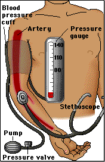

We find the blood pressure by using an instrument called a sphygmomanometer (pronounced sfig-mo-muh-NAM-eh-ter). This device consists of an inflatable cuff that is wrapped around the upper arm and a gauge that measures pressure. A stethoscope is used to listen to the different sounds that occur.
 Continue to Procedure for Measuring Blood Pressure.
Continue to Procedure for Measuring Blood Pressure.